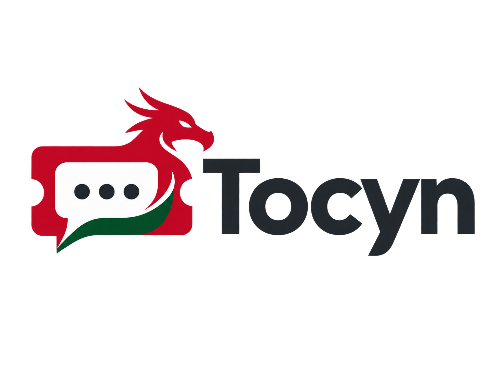

Tocyn
Pronounced "Tock-in" • Welsh for 'Ticket'


Tocyn is a multi-tenant helpdesk and support system built entirely on the Cloudflare serverless edge.
Tocyn is a fork of Luminatik. While the original project laid the groundwork for an edge-native service layer, Tocyn shifts the architecture to support multi-tenant helpdesk operations, integrating real-time communications and third-party channels.
Architecture and Infrastructure
Tocyn strictly enforces a 100% Cloudflare infrastructure footprint. This deliberate vendor lock-in sacrifices provider portability in exchange for zero-maintenance global deployment, low-latency edge execution, and a unified security perimeter.
Handles HTTP routing, tenant authentication, and API logic. Strict edge CPU time and memory limits require that heavy or long-running tasks be deferred asynchronously.
SQLite at the edge. Tenant data isolation is enforced logically via application middleware. Client-side state management mitigates D1's eventual consistency for read replicas.
Stores ticket attachments, avatars, and media. Time-limited pre-signed URLs are generated by Workers to ensure secure, transient client access.
Decouples background tasks from the main request lifecycle. Used for webhook dispatching, SLA breach detection, and inbound message parsing.
Manages persistent WebSocket connections, live agent presence, and WebRTC signalling for video calls. Provides a strictly consistent, single point of coordination to prevent race conditions during concurrent updates.
Integrations and Channels
Beyond standard web forms and email ingestion, Tocyn is engineered to handle multiple synchronous and asynchronous support vectors:
-
WebRTC Video & Audio Direct video and audio communication embedded into the interface. Durable Objects handle session signalling for remote diagnostics without third-party clients.
-
•
Signal Integration Bi-directional messaging integration allowing secure, end-to-end encrypted interactions with clients who prefer instant messaging.
-
•
Remote Support Orchestration Webhook and API endpoints interface with third-party RMM tools, automatically mapping remote session IDs to specific support tickets.
Contribute or Request Access
Use this form to report bugs, suggest features, or enquire about deploying Tocyn in your workplace.